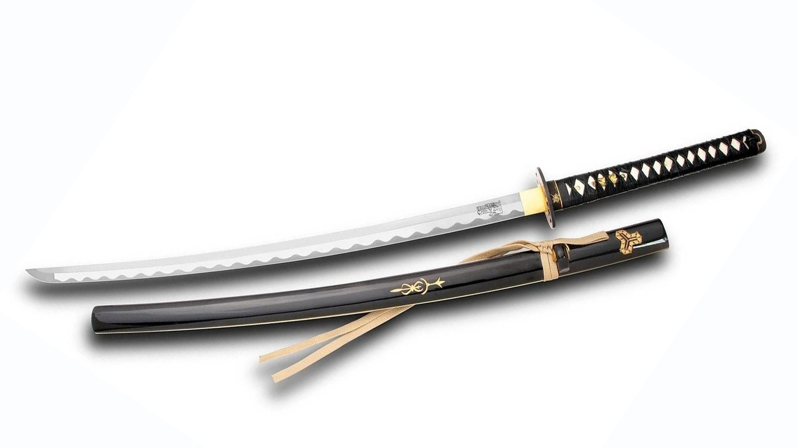

Blades & martial arts/Kill Bill Vol. 1 (2003)/Hattori Hanzo Katana

▦ 4 photos · ▶ 2 videosWeapon / Blades
Hattori Hanzo
Katana
The Bride’s sword in Kill Bill Vol. 1 (2003).
First seenKill Bill Vol. 1, 2003
MakerHattori Hanzo
The smithFictional
Named afterA 16th-century samurai
Key sceneThe Bride takes on the Crazy 88 at the House of Blue Leaves.